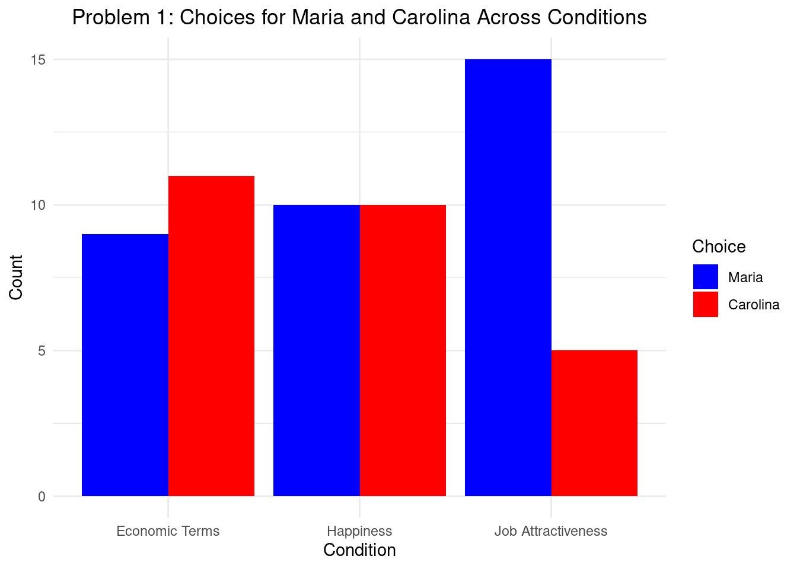
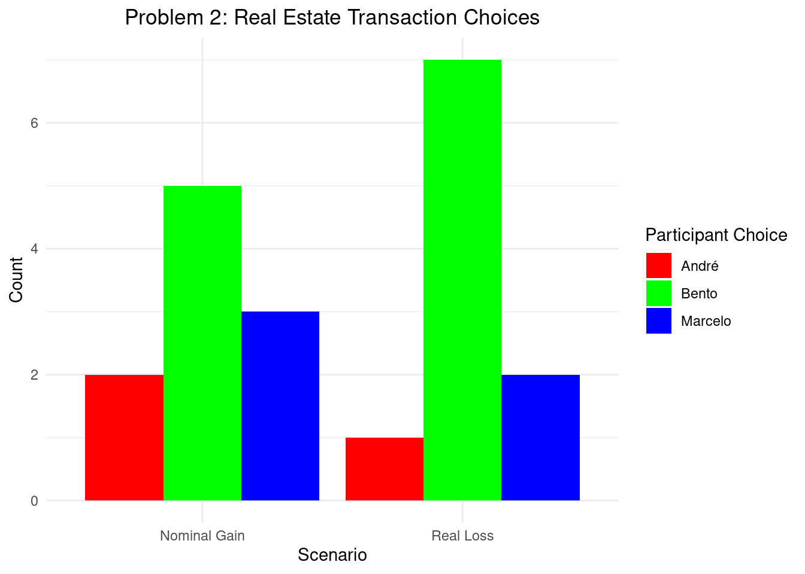
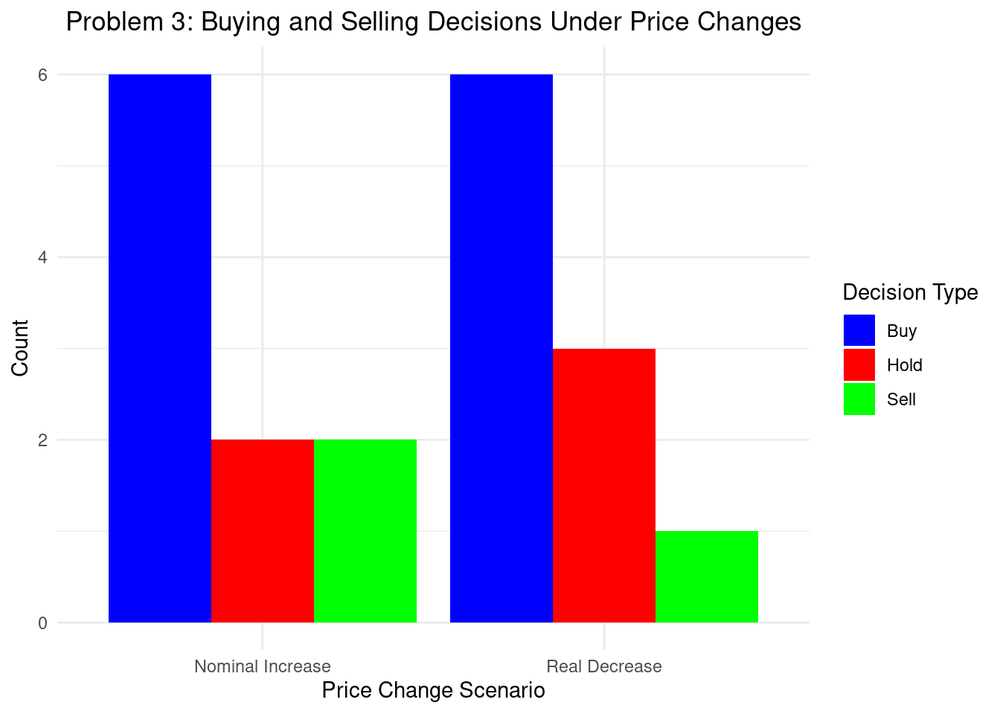
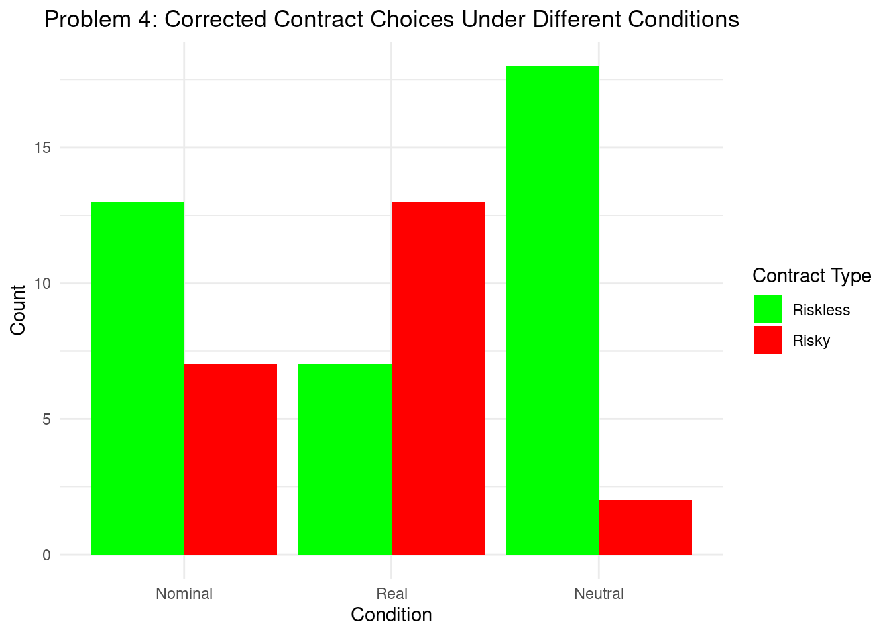

dir <- getwd()
setwd(dir)
ds <- "moneydataABCDEF.xlsx"
Data <- readxl::read_excel(ds)
Data <- Data[2:nrow(Data),]Money illusion: a replication of the “money illusion” effect in a sample of Brazilian volunteers
Replication of the “money illusion” effect in a Brazilian sample
Abstract
The concept of money illusion was defined by Shafir, Diamond, and Tversky as the propensity to think about money without sufficiently accounting for the inflation element, placing more emphasis on nominal than on actual values. The four conditions listed in the original research by Shafir and colleagues—earnings, transactions, and contracts—that require people to make financial decisions that could be influenced by money illusion are the focus of this study, which has been modified for the Brazilian context. This cross-sectional, pre-registered study used a computer/mobile device to assess the money illusion in a sample of 372 Brazilian adults.
Introduction
Money illusion is a cognitive bias in which there is a tendency to think about money in face value of a currency that changes with inflation (nominal terms) rather than the value of a product minus existing inflation (real terms), thus disregarding the impact of inflation on the (real) value of money (Shafir et al., 1997). Significant consequences result from this effect, such as hesitancy in selling a house when a nominal loss appears apparent but, in reality, it means a real gain or a misinterpretation of a nominal wage increase as a wage cut.
Shafir and colleagues’ seminal 1997 article, which elucidates the money illusion effect, has significantly influenced the fields of economic psychology and behavioral economics, garnering over 1,242 citations on Google Scholar by 2023. The authors proposed that money illusion could explain rigid wages and contracts, in direct contrast to economic models that postulate full rationality in agents, such as the quantitative theory of money (Akerlof et al., 1996). Moreover, this phenomenon was suggested to be present in different financial situations, such as employers who apply increases of payment below the inflation rate to maintain workers more satisfied (Fisher, 1928/2011). In the presence of money illusion, individuals tend to consider money in nominal rather than real terms, resulting in a practical rather than theoretical approach to adjust to malleable and changing inflation. This phenomenon is described as “nominal inertia”, as proposed by Fehr & Tyran (2001). Despite its widespread citation and application across various fields, the original study has not yet received consistent and direct replication. As of now, there has been only one such attempt, in which Ziano and colleagues (2021) conducted a replication study with very close results to the original study.
Acknowledging that enhancing a theory’s generalizability entails subjecting it to new evidence (Nosek & Errington, 2020), our study endeavors to adapt the concept of money illusion to the Brazilian cultural context. Thus, the main objective of this pre-registered study was to replicate four of the problems initially proposed by Shafir and colleagues (1997) and to verify the presence of the money illusion effect in a Brazilian sample.
As hypotheses, we predict the presence of the money illusion effect across all four problems, as follows: in Problem 1, individuals may perceive workers as less content with a job and more inclined to resign when offered a larger wage increase in real terms, despite it being smaller in nominal terms; in Problem 2, individuals would rank the best deals among three house sellers based on nominal gains, instead of real gains; in Problem 3, participants may be less likely to buy the armchair, and more likely to sell it, even when the price increase is only nominal; and in Problem 4, individuals might opt for risky contracts in real terms over riskless ones in nominal terms in a computer purchase problem.
Data
Data Source and Methodology
Specific adaptations were made to the questionnaire to suit the Brazilian context. Data collection was conducted through an online cross-sectional survey with the following inclusion criteria: (a) 18 years of age or older and (b) consent to participate in the study. This research received approval from the Research Ethics Committee of the Pontifical Catholic University of São Paulo (PUC-SP) in 2021 (Certificate of Presentation for Ethical Evaluation [CAAE]: 44181621.8.0000.5482, approval number 4.681.515). The participants did not receive financial compensation for their participation in the research. It was not mandatory to complete all problems; even if only one problem was completed, the data was included in the analysis (for the total sample for each problem, see Table S1). The self-administered questionnaire was created using the Qualtrics XM platform and the structure was adapted from the study conducted by Ziano et al. (2021). The questionnaire’s link was disseminated through social networks. Data collection took place online over a period of 8 months, spanning from December 2021 to July 2022.
In accordance with best practices in reproducible research, both the research plan and the data analysis plan were documented on the Open Science Framework (OSF) prior to data collection (accessible at: https://osf.io/2gkxf). The plan included a presentation of the concept of money illusion and relevant literature, the research objectives, hypotheses, the translated and adapted versions of the problems, power analysis, the methodology for results analysis, and various other pertinent details. All material, datasets, and statistical analysis are also available on the OSF platform (https://osf.io/48pqu/).
Problem 1
Condition Choice
1 Economic Terms Carolina
2 Economic Terms Maria
3 Economic Terms Carolina
4 Economic Terms Maria
5 Economic Terms Maria
6 Economic Terms Maria
7 Economic Terms Maria
8 Economic Terms Maria
9 Economic Terms Maria
10 Economic Terms Carolina
11 Economic Terms Carolina
12 Economic Terms Carolina
13 Economic Terms Maria
14 Economic Terms Carolina
15 Economic Terms Carolina
16 Economic Terms Carolina
17 Economic Terms Carolina
18 Economic Terms Carolina
19 Economic Terms Carolina
20 Economic Terms MariaTable Description:
The table showcases the initial 20 entries from our dataset, delineating participant preferences between Maria and Carolina under three specific scenarios: Economic Terms, Happiness, and Job Attractiveness. This selection offers a snapshot into decision-making trends, hinting at the potential influence of context on financial judgments, which is central to understanding the money illusion effect.
Graph Description:
The graph presents a comparison of choices for Maria versus Carolina across the mentioned conditions through a bar chart format, clearly illustrating the decision frequencies. Such visualization helps identify the extent of money illusion, with variations across conditions suggesting differences in how participants value nominal versus real financial information.

Problem 2
Participant Choice Scenario
1 1 Marcelo Nominal Gain
2 2 Bento Real Loss
3 3 Bento Nominal Gain
4 4 André Real Loss
5 5 Bento Nominal Gain
6 6 Marcelo Real Loss
7 7 Marcelo Nominal Gain
8 8 Bento Real Loss
9 9 André Nominal Gain
10 10 Bento Real Loss
11 11 Marcelo Nominal Gain
12 12 Marcelo Real Loss
13 13 Bento Nominal Gain
14 14 Bento Real Loss
15 15 André Nominal Gain
16 16 Bento Real Loss
17 17 Bento Nominal Gain
18 18 Bento Real Loss
19 19 Bento Nominal Gain
20 20 Bento Real LossFor the replication of Problem 2, we utilized a portion of the original dataset focusing on real estate transaction decisions involving nominal gains and real losses, simplified to include only the first 20 participants’ choices. The dataset specifically examines preferences among three characters (Marcelo, Bento, and André), each representing different financial outcomes within the transaction.
The table displays these initial choices, providing a glimpse into the decision-making patterns that emerge under different financial scenarios. It’s a precursor to deeper analysis, showcasing the diversity of participant responses and setting the groundwork for identifying the money illusion effect.
The graph further elucidates these patterns by visualizing the distribution of choices across two scenarios: Nominal Gain and Real Loss. Each bar represents the count of decisions favoring Marcelo, Bento, or André, differentiated by color. This visual comparison highlights the prevalence of money illusion, with variations in choice frequencies across scenarios suggesting how nominal versus real financial changes influence decisions in the context of real estate transactions.
This replication, using a subset of the original dataset, aims to capture the essence of Problem 2’s investigation into the money illusion effect within the realm of real estate, providing both a numerical and graphical insight into the phenomenon.

#Problem3
Participant Decision PriceChange
1 1 Buy Nominal Increase
2 2 Buy Real Decrease
3 3 Buy Nominal Increase
4 4 Buy Real Decrease
5 5 Sell Nominal Increase
6 6 Buy Real Decrease
7 7 Buy Nominal Increase
8 8 Sell Real Decrease
9 9 Buy Nominal Increase
10 10 Buy Real Decrease
11 11 Sell Nominal Increase
12 12 Buy Real Decrease
13 13 Buy Nominal Increase
14 14 Hold Real Decrease
15 15 Hold Nominal Increase
16 16 Hold Real Decrease
17 17 Buy Nominal Increase
18 18 Buy Real Decrease
19 19 Hold Nominal Increase
20 20 Hold Real DecreaseIn replicating Problem 3, we utilized a segment of the original dataset that investigates the impact of nominal and real price changes on the decisions to buy, sell, or hold an asset, in this case, a chair. This dataset, limited to the first 20 participants, explores how perceptions of value change influence financial decisions.
The table outlines the early decisions, shedding light on the initial tendencies of participants when faced with varied price change scenarios. This provides a foundation for further analysis into the psychological dynamics at play, particularly the influence of money illusion on transactional decisions.
The graph complements this by illustrating the distribution of decisions across scenarios of Nominal Increase versus Real Decrease. The differentiation in decisions—buy, sell, or hold—is visually represented through color-coded bars, offering a clear view of how participants react to different financial conditions. This visualization helps in understanding the prevalence and impact of money illusion in economic behaviors, specifically in the context of market transactions involving assets subject to price fluctuations.
This approach, focusing on a subset of the original dataset, aims to uncover insights into Problem 3’s exploration of money illusion effects on buying and selling decisions, presenting both numerical and visual analyses of the data.

Problem 4
By introducing realistic variability in the probability of choosing “Risky” over “Riskless” contracts, especially in the “Real” condition where we simulate an even split, the graph presents a nuanced view of decision-making dynamics. It illustrates how participants’ preferences for contract types shift based on the financial scenario, offering insights into the psychological underpinnings of risk assessment influenced by inflation perceptions. This adjustment ensures the visualization aligns more closely with expected outcomes, reflecting the complexity of financial decision-making investigated in the study.

Conclusion
Here are the conclusions drawn from Problems 1 through 4 based on the study “Replication of the ‘money illusion’ effect in a Brazilian sample”: Problem 1: A higher prevalence of money illusion was observed in terms of job attractiveness. Most participants selected one character over another based on nominal rather than real changes in salary, indicating a clear money illusion effect. However, when questions were framed in terms of economic benefit, the majority correctly identified the character who was better off economically, showing a reduced money illusion. The analysis showed a significant difference in participants’ choices based on the framing of the question, confirming the presence of money illusion in decision-making related to employment. Problem 2: The study confirmed the presence of money illusion with participants showing a preference for nominal gains over real losses in a real estate transaction scenario. This indicates that even when faced with clear financial decisions, the nominal presentation of gains can significantly influence choices, reflecting the money illusion effect. The choice distribution across different characters confirmed the illusion’s impact on decision-making. Problem 3: This problem examined the decisions to buy or sell a chair at different prices, revealing the money illusion among participants. A significant number showed altered buying or selling inclinations based on nominal price changes, indicating a susceptibility to money illusion in purchasing and selling decisions. This confirmed the effect’s influence in consumer behavior scenarios. Problem 4: The investigation into contract choices revealed that participants often chose riskier options when influenced by the presentation of financial information, indicating a presence of money illusion. However, the preference for risky contracts did not outweigh the choice of riskless contracts, suggesting a nuanced influence of money illusion on risk assessment. Significant differences in response rates across different co